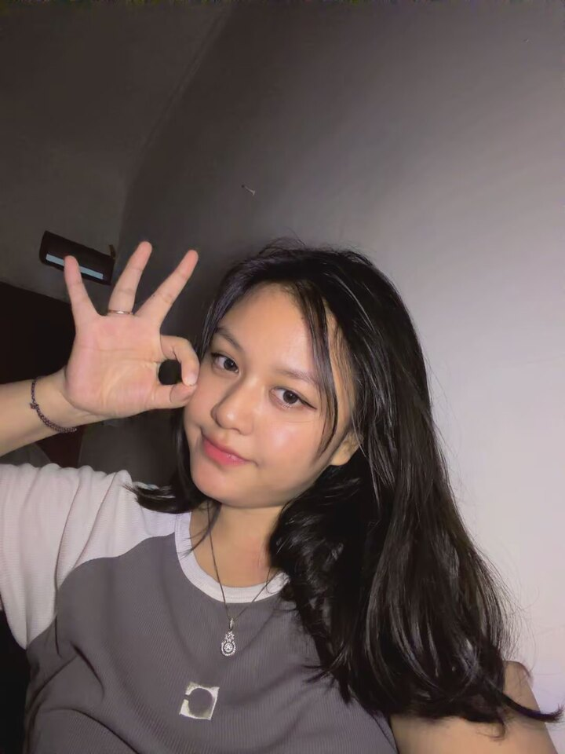

2024 — PRESENT · SEMESTER 5
BINUS University
Bachelor’s Degree in Computer Science
Bandung, Indonesia
Undergraduate2024–Now
COMPUTER SCIENCE STUDENT · BANDUNG, INDONESIA
Building Practical Solutions Through Code.
I am a Computer Science student interested in software development, web technologies, and cloud computing. I enjoy exploring new technologies and building practical projects that help me grow as a developer.

A LITTLE ABOUT ME
I enjoy turning ideas into practical projects and learning how the pieces of software fit together.
I am a Computer Science student at BINUS University, Bandung, with an interest in software development, web technologies, and cloud computing.
Through academic projects and hands-on practice, I have gained experience working with programming languages, web development frameworks, databases, and containerized applications. I enjoy learning new technologies, solving technical problems, and building projects that help me improve my practical skills.
I am continuously developing my technical knowledge and looking forward to gaining more experience through collaborative projects, internships, and real-world software development opportunities.
MY LEARNING PATH
Building a foundation in computing through coursework, experimentation, and personal projects.
2024 — PRESENT · SEMESTER 5
Bachelor’s Degree in Computer Science
Bandung, Indonesia
TOOLS I WORK WITH
A growing toolkit developed through coursework and project practice. Proficiency varies by technology.
Skills are presented as learning and practice areas, not as proficiency ratings.
SELECTED WORK
A mix of web interfaces and applications. Details and links are shown only when supported by the available files.
A cookies storefront with product variants, a cart, quantity controls, and a WhatsApp ordering flow implemented in JavaScript.
A handmade-product store featuring category-based product data, product filtering, and a craft customization flow.
A budget and material-planning app with templates, material lists, budget summaries, and account flows in the source code.
Repository and live-demo buttons are intentionally omitted until valid URLs are supplied and verified.
WORKING WITH PEOPLE
EVENT COMMITTEE
Equipment & Logistics (Perkab)
Served in the Equipment and Logistics division for an EEO event committee at BNCC. My responsibilities included identifying vendors, negotiating prices, and coordinating equipment needs with fellow committee members.
Although I initially had not worked with my fellow division members before, I adapted quickly and collaborated to complete the assigned tasks. During the event, when a presentation frame intended for a speaker was found damaged, I worked with a teammate to find a replacement promptly. After resolving the issue, I continued my guest reception duties while maintaining a professional attitude.
*Period shown as 2024–2025; exact dates have not been confirmed.
BEYOND THE SCREEN
A few interests that keep my creativity active outside my coursework.
Experimenting with recipes and working on a soft-cookie business called Maukies.
Making handmade pieces and exploring product ideas through Toko Craft.
Learning about product presentation, customer experience, and entrepreneurship.
Enjoying music as a creative break from technical work.
Exploring tools and building small projects to learn by doing.
LET’S CONNECT
I'd love to connect. Feel free to reach out about software projects, collaboration, or opportunities to learn and contribute.
Email me